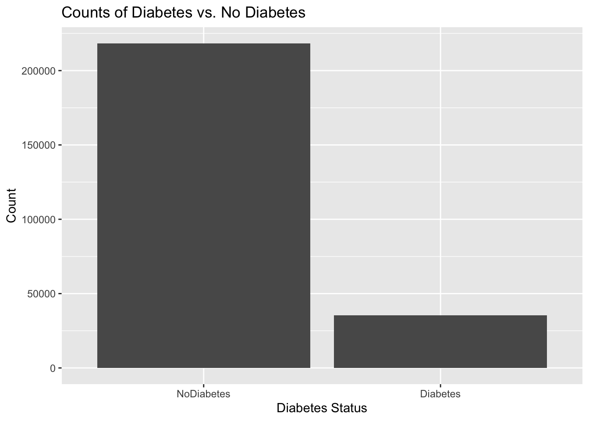
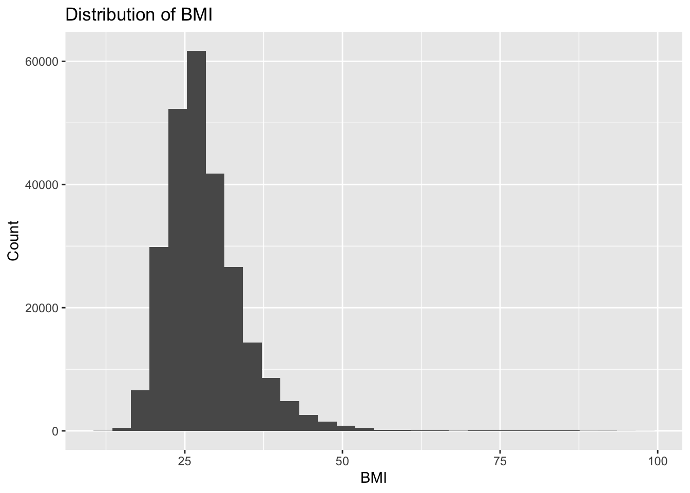
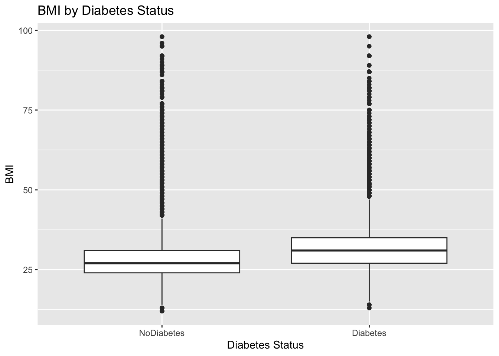
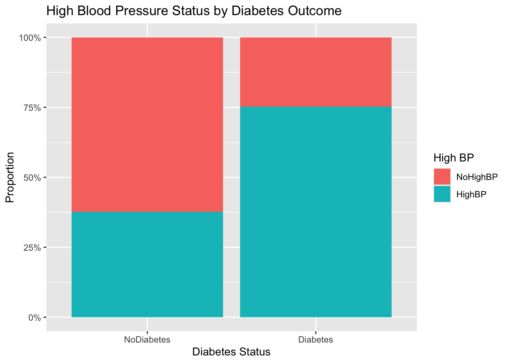
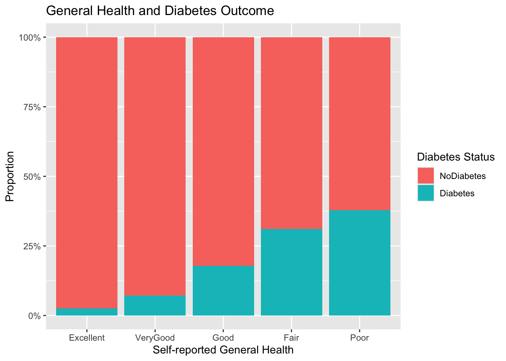
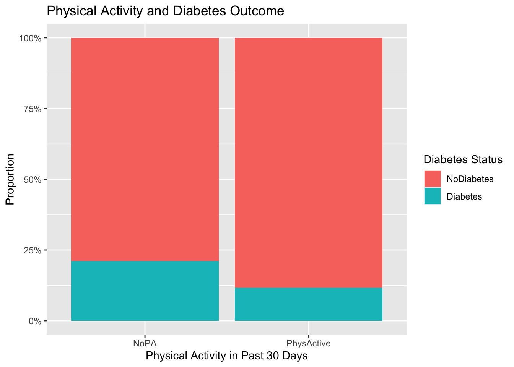

# Load required packages
library(tidyverse) # data wrangling, plots
library(janitor) # clean variable names
library(skimr) # data summaries
# Set a reproducible seed
set.seed(123)Exploratory Data Analysis: Diabetes Health Indicators
Introduction
In this analysis, I explore the Diabetes Health Indicators dataset (diabetes_binary_health_indicators_BRFSS2015.csv), which is based on the Behavioral Risk Factor Surveillance System (BRFSS) survey of adult health behaviors and conditions.
- Response variable:
Diabetes_binary0= No diabetes
1= Diabetes
I focus on the following predictors (a subset of the full data):
HighBP– high blood pressure
HighChol– high cholesterol
BMI– body mass index (numeric)
Smoker– has smoked at least 100 cigarettes
PhysActivity– physical activity in past 30 days
GenHlth– general health (1 = excellent to 5 = poor)
MentHlth– days of poor mental health
PhysHlth– days of poor physical health
DiffWalk– serious difficulty walking
Sex– biological sex
Age– age category
Income– income category
Purpose of this EDA/Modeling Goals:
- Describe the distributions of key health indicators in this sample.
- Explore how these indicators relate to diabetes status (
Diabetes_binary).
- Inform the choice and specification of predictive models that will be built in the accompanying Modeling document, where the ultimate goal is to predict diabetes status from these health indicators.
Data Import and Cleaning
# Read data from folder
raw_diabetes <- read_csv(
"diabetes_binary_health_indicators_BRFSS2015.csv"
)Rows: 253680 Columns: 22
── Column specification ────────────────────────────────────────────────────────
Delimiter: ","
dbl (22): Diabetes_binary, HighBP, HighChol, CholCheck, BMI, Smoker, Stroke,...
ℹ Use `spec()` to retrieve the full column specification for this data.
ℹ Specify the column types or set `show_col_types = FALSE` to quiet this message.# Clean column names to be snake_case
diabetes <- raw_diabetes %>%
clean_names()
# Inspect the structure
glimpse(diabetes)Rows: 253,680
Columns: 22
$ diabetes_binary <dbl> 0, 0, 0, 0, 0, 0, 0, 0, 1, 0, 1, 0, 0, 1, 0, 0,…
$ high_bp <dbl> 1, 0, 1, 1, 1, 1, 1, 1, 1, 0, 0, 1, 0, 1, 0, 1,…
$ high_chol <dbl> 1, 0, 1, 0, 1, 1, 0, 1, 1, 0, 0, 1, 0, 1, 1, 0,…
$ chol_check <dbl> 1, 0, 1, 1, 1, 1, 1, 1, 1, 1, 1, 1, 1, 1, 1, 1,…
$ bmi <dbl> 40, 25, 28, 27, 24, 25, 30, 25, 30, 24, 25, 34,…
$ smoker <dbl> 1, 1, 0, 0, 0, 1, 1, 1, 1, 0, 1, 1, 1, 0, 1, 0,…
$ stroke <dbl> 0, 0, 0, 0, 0, 0, 0, 0, 0, 0, 0, 0, 0, 0, 1, 0,…
$ heart_diseaseor_attack <dbl> 0, 0, 0, 0, 0, 0, 0, 0, 1, 0, 0, 0, 0, 0, 0, 0,…
$ phys_activity <dbl> 0, 1, 0, 1, 1, 1, 0, 1, 0, 0, 1, 0, 0, 0, 1, 1,…
$ fruits <dbl> 0, 0, 1, 1, 1, 1, 0, 0, 1, 0, 1, 1, 0, 0, 0, 0,…
$ veggies <dbl> 1, 0, 0, 1, 1, 1, 0, 1, 1, 1, 1, 1, 1, 1, 1, 0,…
$ hvy_alcohol_consump <dbl> 0, 0, 0, 0, 0, 0, 0, 0, 0, 0, 0, 0, 0, 0, 0, 0,…
$ any_healthcare <dbl> 1, 0, 1, 1, 1, 1, 1, 1, 1, 1, 1, 1, 1, 1, 1, 1,…
$ no_docbc_cost <dbl> 0, 1, 1, 0, 0, 0, 0, 0, 0, 0, 0, 0, 0, 0, 1, 0,…
$ gen_hlth <dbl> 5, 3, 5, 2, 2, 2, 3, 3, 5, 2, 3, 3, 3, 4, 4, 2,…
$ ment_hlth <dbl> 18, 0, 30, 0, 3, 0, 0, 0, 30, 0, 0, 0, 0, 0, 30…
$ phys_hlth <dbl> 15, 0, 30, 0, 0, 2, 14, 0, 30, 0, 0, 30, 15, 0,…
$ diff_walk <dbl> 1, 0, 1, 0, 0, 0, 0, 1, 1, 0, 0, 1, 0, 1, 0, 0,…
$ sex <dbl> 0, 0, 0, 0, 0, 1, 0, 0, 0, 1, 1, 0, 0, 0, 0, 0,…
$ age <dbl> 9, 7, 9, 11, 11, 10, 9, 11, 9, 8, 13, 10, 7, 11…
$ education <dbl> 4, 6, 4, 3, 5, 6, 6, 4, 5, 4, 6, 5, 5, 4, 6, 6,…
$ income <dbl> 3, 1, 8, 6, 4, 8, 7, 4, 1, 3, 8, 1, 7, 6, 2, 8,…Converting Variables to Factors
Many columns are coded as 0/1 or numeric categories, but conceptually are categorical. Here I convert them to factors with meaningful labels where appropriate.
diabetes <- diabetes %>%
mutate(
# Response as factor
diabetes_binary = factor(diabetes_binary,
levels = c(0, 1),
labels = c("NoDiabetes", "Diabetes")),
high_bp = factor(high_bp, levels = c(0, 1),
labels = c("NoHighBP", "HighBP")),
high_chol = factor(high_chol, levels = c(0, 1),
labels = c("NoHighChol", "HighChol")),
smoker = factor(smoker, levels = c(0, 1),
labels = c("NonSmoker", "Smoker")),
phys_activity = factor(phys_activity, levels = c(0, 1),
labels = c("NoPA", "PhysActive")),
diff_walk = factor(diff_walk, levels = c(0, 1),
labels = c("NoDiffWalk", "DiffWalk")),
sex = factor(sex, levels = c(0, 1),
labels = c("Female", "Male")),
# General health coded 1–5 (1 = excellent, 5 = poor)
gen_hlth = factor(gen_hlth,
levels = 1:5,
labels = c("Excellent", "VeryGood", "Good",
"Fair", "Poor")),
# Age categories and income categories as ordered factors
age = factor(age, ordered = TRUE),
income = factor(income, ordered = TRUE)
)
# Quick look after conversions
diabetes %>%
select(diabetes_binary, high_bp, high_chol, smoker,
phys_activity, diff_walk, sex, gen_hlth, age, income) %>%
summary() diabetes_binary high_bp high_chol smoker
NoDiabetes:218334 NoHighBP:144851 NoHighChol:146089 NonSmoker:141257
Diabetes : 35346 HighBP :108829 HighChol :107591 Smoker :112423
phys_activity diff_walk sex gen_hlth
NoPA : 61760 NoDiffWalk:211005 Female:141974 Excellent:45299
PhysActive:191920 DiffWalk : 42675 Male :111706 VeryGood :89084
Good :75646
Fair :31570
Poor :12081
age income
9 :33244 8 :90385
10 :32194 7 :43219
8 :30832 6 :36470
7 :26314 5 :25883
11 :23533 4 :20135
6 :19819 3 :15994
(Other):87744 (Other):21594 Missingness
Before any analysis, I check for missing values.
# Count missing values per column
missing_summary <- diabetes %>%
summarise(across(everything(), ~ sum(is.na(.)))) %>%
pivot_longer(everything(),
names_to = "variable",
values_to = "n_missing") %>%
arrange(desc(n_missing))
missing_summary# A tibble: 22 × 2
variable n_missing
<chr> <int>
1 diabetes_binary 0
2 high_bp 0
3 high_chol 0
4 chol_check 0
5 bmi 0
6 smoker 0
7 stroke 0
8 heart_diseaseor_attack 0
9 phys_activity 0
10 fruits 0
# ℹ 12 more rowsOverall Outcome Balance
First, I check how many respondents are labeled with diabetes vs. no diabetes.
# Count how many individuals fall into each diabetes class
diabetes %>%
count(diabetes_binary) %>%
mutate(prop = n / sum(n))# A tibble: 2 × 3
diabetes_binary n prop
<fct> <int> <dbl>
1 NoDiabetes 218334 0.861
2 Diabetes 35346 0.139Bar Plot of Outcome
# Visualize the distribution of diabetes vs. no-diabetes cases
diabetes %>%
ggplot(aes(x = diabetes_binary)) +
geom_bar() +
labs(
x = "Diabetes Status",
y = "Count",
title = "Counts of Diabetes vs. No Diabetes"
)
This plot highlights the strong class imbalance present in the dataset: roughly 86% of respondents report no diabetes, while about 14% report having diabetes. This tells us two important things about the data. First, diabetes is much less common in this BRFSS sample, which is expected but important to quantify. Second, this imbalance will directly affect modeling, because models trained on imbalanced data tend to favor the majority class unless techniques like log-loss or proper tuning are used.
From a data-relationship standpoint, this imbalance also indicates that any predictor-outcome relationships we observe later need to be interpreted with this context—signals associated with diabetes may appear weaker simply because the positive class is much smaller. This reinforces why careful evaluation and appropriate metrics will be important in the modeling stage.
Univariate Summaries of Key Predictors
Before examining how predictors relate to diabetes, it is important to understand each variable on its own. In this section, I explore the distributions of key numeric and categorical predictors to identify typical ranges, levels of variability, and any imbalances in the data. These summaries provide context for interpreting the later bivariate analyses and help highlight variables that may contribute more strongly to distinguishing individuals with and without diabetes. Understanding these one-variable patterns also gives early insight into potential modeling challenges, such as skewed distributions, dominant categories, or low-variability predictors.
Numeric Variables (BMI, Mental & Physical Health Days)
The skim summary allows me to examine the distributions of the three numeric variables I am focusing on: BMI, the number of days of poor mental health, and the number of days of poor physical health. All three variables show no missingness, and BMI displays a notably smaller standard deviation compared to the mental and physical health measures, indicating that BMI values are more concentrated while the health-day variables are more spread out. This preliminary look helps identify the natural ranges of these predictors and highlights which ones may contain more variation to explain differences in diabetes status.
# Generate summary statistics for key numeric health indicators
diabetes %>%
select(bmi, ment_hlth, phys_hlth) %>%
skim()| Name | Piped data |
| Number of rows | 253680 |
| Number of columns | 3 |
| _______________________ | |
| Column type frequency: | |
| numeric | 3 |
| ________________________ | |
| Group variables | None |
Variable type: numeric
| skim_variable | n_missing | complete_rate | mean | sd | p0 | p25 | p50 | p75 | p100 | hist |
|---|---|---|---|---|---|---|---|---|---|---|
| bmi | 0 | 1 | 28.38 | 6.61 | 12 | 24 | 27 | 31 | 98 | ▇▅▁▁▁ |
| ment_hlth | 0 | 1 | 3.18 | 7.41 | 0 | 0 | 0 | 2 | 30 | ▇▁▁▁▁ |
| phys_hlth | 0 | 1 | 4.24 | 8.72 | 0 | 0 | 0 | 3 | 30 | ▇▁▁▁▁ |
BMI Histogram
BMI is one of the most important clinical indicators of metabolic health, so examining its distribution on its own provides valuable context before comparing it across diabetes groups. Looking at the shape, spread, and skewness of BMI values helps reveal how weight-related differences might contribute to diabetes risk and also signals whether nonlinear modeling techniques may be appropriate. The histogram below shows how BMI is distributed across the entire sample.
# Plot the distribution of BMI values across the entire sample
diabetes %>%
ggplot(aes(x = bmi)) +
geom_histogram(bins = 30) +
labs(
title = "Distribution of BMI",
x = "BMI",
y = "Count"
)
The histogram of BMI shows a right-skewed distribution, with most individuals falling between a BMI of roughly 20 and 35, but with a long tail extending to very high BMI values above 50. This skewness is clinically reasonable, as extremely high BMIs are less common but meaningful. Because diabetes risk is known to increase with BMI, this distribution suggests that BMI may be an important predictor in our modeling stage. The presence of a long right tail also indicates the potential value of tree-based models, which can naturally capture nonlinear relationships without requiring transformation.
Categorical Variables
The quick frequency tables summarize the distributions of all of the key categorical predictors, including high blood pressure, high cholesterol, smoking status, physical activity, difficulty walking, sex, general health, age category, and income.
# Display frequency counts for major categorical predictors
diabetes %>%
select(high_bp, high_chol, smoker, phys_activity, diff_walk,
sex, gen_hlth, age, income) %>%
map(~ count(as.data.frame(.), .)) # quick counts$high_bp
. n
1 NoHighBP 144851
2 HighBP 108829
$high_chol
. n
1 NoHighChol 146089
2 HighChol 107591
$smoker
. n
1 NonSmoker 141257
2 Smoker 112423
$phys_activity
. n
1 NoPA 61760
2 PhysActive 191920
$diff_walk
. n
1 NoDiffWalk 211005
2 DiffWalk 42675
$sex
. n
1 Female 141974
2 Male 111706
$gen_hlth
. n
1 Excellent 45299
2 VeryGood 89084
3 Good 75646
4 Fair 31570
5 Poor 12081
$age
. n
1 1 5700
2 2 7598
3 3 11123
4 4 13823
5 5 16157
6 6 19819
7 7 26314
8 8 30832
9 9 33244
10 10 32194
11 11 23533
12 12 15980
13 13 17363
$income
. n
1 1 9811
2 2 11783
3 3 15994
4 4 20135
5 5 25883
6 6 36470
7 7 43219
8 8 90385Most variables show strong imbalance between their categories — for example, far more individuals report NoHighBP than HighBP, and physical activity (PhysActive) is much more common than inactivity (NoPA). These imbalances reflect realistic population patterns, but they also signal that some predictors may carry strong associations with diabetes simply due to the prevalence of certain health behaviors or conditions.
Understanding these distributions is important for two reasons:
- Modeling impact: Tree-based models and random forests handle categorical imbalance well, but predictors with highly dominant categories may still contribute unevenly.
- Relationship context: Categories such as “DiffWalk,” “Poor” general health, or “HighBP” are expected to relate to chronic conditions, including diabetes. Seeing their frequencies now provides context for why they may appear as strong predictors later in the bivariate analysis and model fitting.
Together, these numeric and categorical summaries provide a foundational understanding of the health indicators in this dataset and show early signs of meaningful differences between individuals with and without diabetes.
Bivariate Relationships With Diabetes
In this section, I explore how some of the key predictors relate directly to the diabetes outcome. While earlier summaries focused on understanding individual variables on their own, the goal here is to examine how differences in health behaviors, conditions, and demographic factors manifest across diabetes groups. These visualizations help identify which predictors show the strongest separation between individuals with and without diabetes and therefore hold the greatest potential predictive value. Understanding these relationships provides a crucial bridge between EDA and the modeling stage, guiding expectations about which variables may drive model performance and how different modeling approaches might capture these patterns.
BMI vs Diabetes Status
# Compare BMI distributions between diabetes and non-diabetes groups
diabetes %>%
ggplot(aes(x = diabetes_binary, y = bmi)) +
geom_boxplot() +
labs(
title = "BMI by Diabetes Status",
x = "Diabetes Status",
y = "BMI"
)
The boxplot above comparing BMI between individuals with and without diabetes shows a clear difference: those with diabetes tend to have noticeably higher BMI values on average. The median BMI is shifted upward in the diabetes group, and the overall spread is larger, reflecting greater variability among individuals diagnosed with diabetes. This alignment with medical expectations reinforces BMI as an important predictor. For modeling, this suggests a potentially nonlinear relationship — individuals with moderate or high BMI may experience a sharp increase in diabetes risk, which tree-based models can naturally capture.
High Blood Pressure and Diabetes
# Examine the relationship between high blood pressure and diabetes status
diabetes %>%
count(diabetes_binary, high_bp) %>%
group_by(diabetes_binary) %>%
mutate(prop = n / sum(n)) %>%
ggplot(aes(x = diabetes_binary, y = prop, fill = high_bp)) +
geom_col(position = "fill") +
scale_y_continuous(labels = scales::percent) +
labs(
title = "High Blood Pressure Status by Diabetes Outcome",
x = "Diabetes Status",
y = "Proportion",
fill = "High BP"
)
The proportional bar chart above indicates that high blood pressure is much more common among individuals with diabetes than among those without. While the majority of the full sample reports no high blood pressure, the share of HighBP cases is substantially higher in the diabetes group. This pattern suggests a strong positive relationship: people with elevated blood pressure are more likely to also have diabetes. Given the strength and clarity of this relationship, high blood pressure may be among the most influential predictors in the modeling phase.
General Health and Diabetes
# Visualize how self-reported general health differs by diabetes outcome
diabetes %>%
ggplot(aes(x = gen_hlth, fill = diabetes_binary)) +
geom_bar(position = "fill") +
scale_y_continuous(labels = scales::percent) +
labs(
title = "General Health and Diabetes Outcome",
x = "Self-reported General Health",
y = "Proportion",
fill = "Diabetes Status"
)
When examining general health categories, the distribution shifts dramatically between diabetes groups. Individuals reporting Excellent or VeryGood health are far more prevalent in the non-diabetes group, whereas categories such as Fair and Poor are noticeably over-represented in the diabetes group. This pattern supports the intuitive idea that poorer overall health aligns with chronic conditions like diabetes. It also suggests that the GenHlth variable captures a broad combination of lifestyle and medical risk factors, making it valuable for prediction.
Physical Activity and Diabetes
# Explore how physical activity levels vary across diabetes groups
diabetes %>%
ggplot(aes(x = phys_activity, fill = diabetes_binary)) +
geom_bar(position = "fill") +
scale_y_continuous(labels = scales::percent) +
labs(
title = "Physical Activity and Diabetes Outcome",
x = "Physical Activity in Past 30 Days",
y = "Proportion",
fill = "Diabetes Status"
)
The physical activity comparison reveals that those with diabetes are less likely to report recent physical activity. While physical activity is common in the dataset as a whole, the share of NoPA cases increases among individuals with diabetes. This indicates a meaningful behavioral difference and highlights physical inactivity as a potential risk indicator. This relationship may complement predictors like BMI and blood pressure, offering a lifestyle-based signal in the model.
Summary of Findings and Transition to Modeling
This exploratory analysis provided a detailed look at how key health indicators differ between individuals with and without diabetes in the BRFSS dataset. Several variables displayed strong and meaningful relationships with diabetes status. In particular, individuals with diabetes tended to have higher BMI values, were more likely to report high blood pressure, were less physically active, and reported poorer overall health. These patterns align with clinical expectations and suggest that multiple lifestyle and health-condition indicators contribute to diabetes risk.
The categorical summaries showed substantial imbalance across many predictors, but the direction of those imbalances was informative: categories representing poorer health or more limited mobility were consistently more common among those with diabetes. Meanwhile, variables like age, income, and sex appeared to have weaker but still potentially relevant associations, especially when combined with the stronger health-related predictors.
Overall, the EDA results highlight which predictors are most promising for building an accurate model and reinforce the need for modeling techniques that can capture nonlinear and interaction-based relationships. With this understanding, the next step is to formally evaluate predictive models using a training/test split and compare performance across a classification tree and a random forest to identify the best approach.